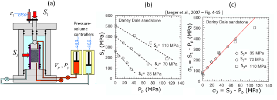

Next: Determination of stress regime Up: Applications Previous: Critically stressed fractures and Contents
Tectonic plates drive movements of the Earth's crust (Fig. 5.25). High temperatures and high effective stresses at great depth favor ductile deformation. Low temperatures and low effective stresses in the near-surface favor brittle failure.
![\includegraphics[scale=0.55]{.././Figures/split/6-21.pdf}](img609.svg) |
As a result of ubiquitous shear failure and faulting of the Earth's shallow crust, friction equilibrium limits the maximum magnitude of stresses imparted by tectonic strains. The limit is proportional to the frictional strength of faults. Because faults are cohesion-less, the frictional strength equation is simply:
 |
(5.14) |
(like sand, zero-intercept in the y-axis) where  is the maximum effective principal stress,
is the maximum effective principal stress,  is the minimum effective principal stress, and
is the minimum effective principal stress, and
![$q=[1+\sin(\varphi)]/[1-\sin(\varphi)]$](img611.svg) is the anisotropy factor.
The shear strength of the brittle crust has a direct implication in determining the maximum and minimum values of horizontal stresses for each stress regime.
Frictional equilibrium of the brittle crust implies that horizontal stresses are controlled by shear failure.
Hence, for
is the anisotropy factor.
The shear strength of the brittle crust has a direct implication in determining the maximum and minimum values of horizontal stresses for each stress regime.
Frictional equilibrium of the brittle crust implies that horizontal stresses are controlled by shear failure.
Hence, for
 cannot be smaller than
cannot be smaller than
 , for
, for
 cannot be greater than
cannot be greater than
 , and for
cannot be greater than
, and for
cannot be greater than
 .
.
As a result, the assumption of limit frictional equilibrium permits estimating minimum and maximum horizontal stresses if effective stresses
or
 are known.
are known.
PROBLEM 5.13: A given site onshore is known to be subjected to a NF stress regime and hydrostatic pore pressure. Calculate the total horizontal minimum stress  at a depth of 5000 ft assuming frictional equilibrium of faults and friction angle
at a depth of 5000 ft assuming frictional equilibrium of faults and friction angle
 .
.
SOLUTION
The solution is a lower bound estimation of for normal faulting stress regime dictated by frictional equilibrium.


PROBLEM 5.14: A given site onshore is known to be subjected to a RF stress regime. Hard pressure is detected at 2000 ft with
. Calculate the total maximum horizontal stress at this depth assuming frictional equilibrium of faults and friction angle
.
SOLUTION
The solution is an upper bound for .

 psi
psi
 is the minimum principal since the site is subjected to reverse faulting regime.
Given the overpressure parameter, pore pressure is
is the minimum principal since the site is subjected to reverse faulting regime.
Given the overpressure parameter, pore pressure is
 psi
psi
and effective vertical stress is
 psi
psi
Finally, the maximum effective horizontal stress depends on the vertical effective stress (reverse faulting regime), so that
 psi psi
psi psi

The bounding limits of minimum and maximum horizontal stress for a given vertical stress and pore pressure can be plotted through Zoback's (effective) stress polygon (Fig. 5.26). The colored lines represent the bounds for normal faulting stress regime (NF), strike-slip faulting stress regime (SS), and reverse faulting stress regime (RF).
![\includegraphics[scale=0.50]{.././Figures/split/6-24.pdf}](img631.svg) |
Fig. 5.27 shows an example of where the state of stress would plot in the stress polygon for a place with a stress regime that fluctuates from NF to SS with depth.
 |